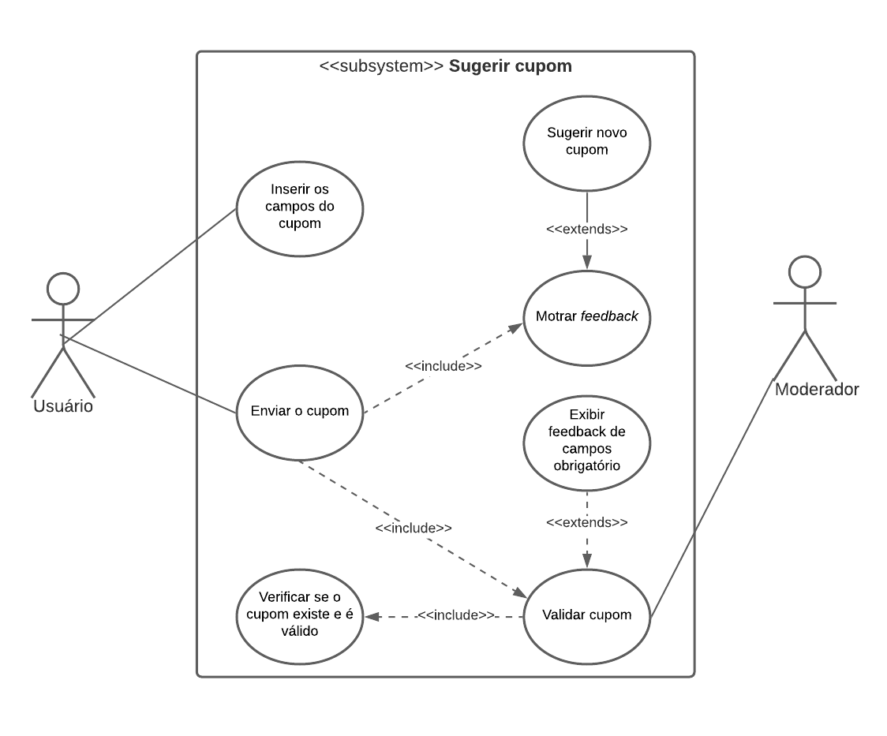
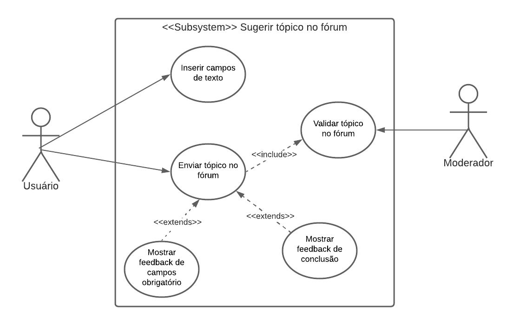
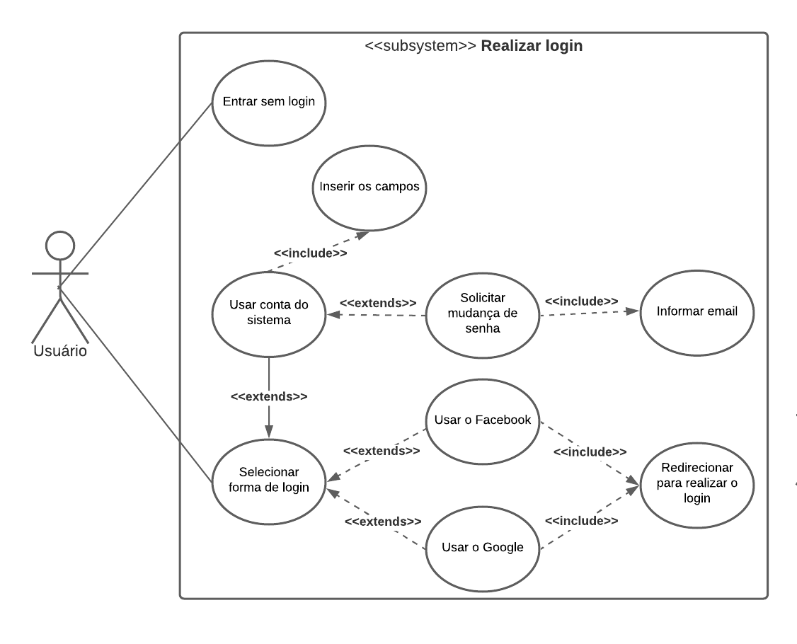
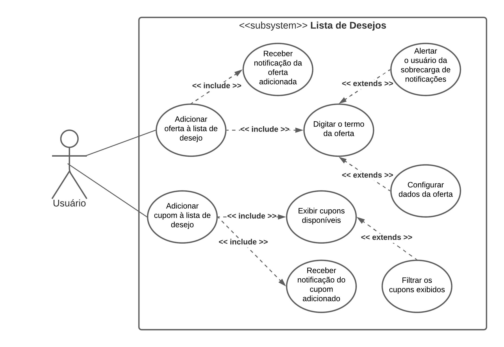

Casos de uso
Introdução
Um documento de caso de uso é uma metodologia que descreve como o usuário realizará uma determinada tarefa dentro do contexto de um software. Ele descreve o ponto de vista do usuário e como o sistema responde a partir de suas ações, cada caso de uso é uma sequência de passos que são descritos a partir de fluxos, que começam com um objetivo principal e terminam quando esse objetivo está realizado.
Casos de Uso
UC01: Sugerir oferta

| UC01 | Informações |
|---|---|
| Descrição | O ato do usuário sugerir uma oferta que poderá ser publica no sistema |
| Ator(es) | Usuário |
| Pré-condições | O ator deve estar logado, deve estar na seção de ofertas do sistema e deve ter o link de uma oferta |
| Fluxo principal | FP01: O ator sugere uma oferta 1. O ator clica no icone de "+" 2. O sistema expõe uma tabela de opções 3. O ator clica em sugerir oferta 4. O sistema redireciona o ator para a seção de sugerir nova oferta 5. O ator preenche os campos de "Link da oferta", "Titulo da oferta", "Preço" 6. O ator coloca uma imagem da oferta no campo de imagem 7. O ator clica no botão "Enviar oferta" 8. O sistema gera um pop-up para o autor com o feedback do envio 9. O ator clica em fechar 10. O ator é redirecionado para a aba de ofertas. |
| Fluxo alternativo | FA01: Fluxo de quando o ator sugere uma oferta pela primeira vez: 1. O ator clica no icone de "+" 2. O sistema expõe uma tabela de opções 3. O ator clica em sugerir oferta 4. O sistema redireciona o ator para a seção de sugerir nova oferta 5. O ator preenche os campos de "Link da oferta", "Titulo da oferta", "Preço" 6. O ator coloca uma imagem da oferta no campo de imagem 7. O ator clica no botão "Enviar oferta" 8. O sistema gera um pop-up parabenizando o ator pela sua primeira oferta e o premia com uma medalha 9. O ator clica no botão "Fechar" 10. O sistema gera outro pop-up para o autor com o feedback do envio 11. O ator clica em fechar 12. O ator é redirecionado para a aba de ofertas. FA02: Fluxo de quando o ator deseja sugerir uma oferta seguida de uma anterior 1. O ator clica no icone de "+" 2. O sistema expõe uma tabela de opções 3. O ator clica em sugerir oferta 4. O sistema redireciona o ator para a seção de sugerir nova oferta 5. O ator preenche os campos de "Link da oferta", "Titulo da oferta", "Preço" 6. O ator coloca uma imagem da oferta no campo de imagem 7. O ator clica no botão "Enviar oferta" 8. O sistema gera um pop-up para o autor com o feedback do envio 9. O ator clica em "Adicionar outra" 10. O ator é redirecionado para a aba de sugerir oferta. |
| Fluxo de exceções | FE01: O ator não completa os campos obrigatórios para sugerir a oferta 1. O ator clica no icone de "+" 2. O sistema expõe uma tabela de opções 3. O ator clica em sugerir oferta 4. O sistema redireciona o ator para a seção de sugerir nova oferta 5. O ator não preenche os campos de "Link da oferta", "Titulo da oferta", "Preço" 6. O ator coloca uma imagem da oferta no campo de imagem 7. O ator clica no botão "Enviar oferta" 8. O sistema gera um pop-up alertando o ator sobre a necessidade de preencher o campo obrigatório FE02: Ocorre a perda de conexão durante o uso do aplicativo 1. O ator clica no icone de "+" 2. O sistema expõe uma tabela de opções 3. O ator clica em sugerir oferta 4. O sistema gera um pop-up alertando sobre a impossíbilidade de realizar a ação 5. O ator clica no botão "ok" |
| Pós condições | O ator poderá ter uma oferta publicada, também terá a validação do oferta e o ator terá a oferta que sugeriu no seu histórico de ofertas |
| Rastreabilidade | Requisito Funcional 3 do documento contendo todos os requisitos - RF3 Sugerir oferta |
UC02: Sugerir cupom

| UC02 | Informações |
|---|---|
| Descrição | O ato do usuário sugerir um cupom que poderá ser publicado no sistema |
| Ator(es) | Usuário, moderador |
| Pré-condições | O ator deve estar logado, deve estar na seção de "últimos cupons" e "cupons por loja" do sistema e deve ter o link e as informações de um cupom |
| Fluxo principal | FP01: O ator sugere um cupom 1. O ator clica no icone de "+" 2. O sistema expõe uma lista de opções 3. O ator clica em sugerir cupom 4. O sistema redireciona o ator para a seção de sugerir um novo cupom 5. O ator preenche os campos de "Link da cupom", "Descreva o cupom", "Loja", "Código do cupom", "Regras de aplicação" 7. O ator clica no botão "Enviar cupom" 8. O sistema gera um pop-up para o autor com o feedback do envio 9. O ator clica em fechar 10. O ator é redirecionado para a aba de cupons. FP02: Moderador valida tópico no fórum 1. Moderador acessa página de submissões pendentes 2. Moderador verifica se o tópico é válido 3. Moderador aceita ou rejeita o tópico proposto |
| Fluxo alternativo | FA01: Fluxo de quando o ator deseja sugerir um cupom seguido de um anterior 1. O ator clica no icone de "+" 2. O sistema expõe uma lista de opções 3. O ator clica em sugerir cupom 4. O sistema redireciona o ator para a seção de sugerir um novo cupom 5. O ator preenche os campos de "Link da cupom", "Descreva o cupom", "Loja", "Código do cupom", "Regras de aplicação" 7. O ator clica no botão "Enviar cupom" 8. O sistema gera um pop-up para o autor com o feedback do envio 9. O ator clica em "Adicionar outra" 10. O ator é redirecionado para a aba de cupons. |
| Fluxo de exceções | FE01: O ator não completa os campos obrigatórios para sugerir o cupom 1. O ator clica no icone de "+" 2. O sistema expõe uma lista de opções 3. O ator clica em sugerir cupom 4. O sistema redireciona o ator para a seção de sugerir um novo cupom 5. O ator preenche os campos de "Link da cupom", "Descreva o cupom", "Loja", "Código do cupom", "Regras de aplicação" 7. O ator clica no botão "Enviar cupom" 8. O sistema gera um pop-up alertando o ator sobre a necessidade de preencher o campo obrigatório FE02: Ocorre a perda de conexão durante o uso do aplicativo 1. O ator clica no icone de "+" 2. O sistema expõe uma lista de opções 3. O ator clica em sugerir cupom 4. O sistema gera um pop-up alertando sobre a impossibilidade de realizar a ação 5. O ator clica no botão "ok" |
| Pós condições | O ator poderá ter um cupom publicado, caso esse seja válido, e o ator terá o cupom que sugeriu no seu histórico de cupons |
| Rastreabilidade | Requisito Funcional 4 do documento contendo todos os requisitos - RF4 Sugerir cupom |
UC03: Sugerir tópico no forum

| UC03 | Informações |
|---|---|
| Descrição | O ato do usuário sugerir um tópico no fórum do sistema |
| Ator(es) | Usuário, moderador |
| Pré-condições | O ator deve estar logado, e deve estar na seção de fórum do sistema. |
| Fluxo principal | FP01: Ator sugere um tópico no fórum 1. O ator clica no icone de "+" 2. O sistema redireciona o ator para a seção de novo tópico no fórum 3. O ator preenche os campos de "Título do fórum", "Categoria do fórum" e "Descrição do tópico" 4. O ator clica no botão "Enviar tópico" 5. O sistema gera um pop-up para o autor com o feedback do envio 6. O ator clica em fechar 7. O ator é redirecionado para a aba de fórum FP02: Moderador valida tópico no fórum 1. Moderador acessa página de submissões pendentes 2. Moderador verifica se o tópico é válido 3. Moderador aceita ou rejeita o tópico proposto |
| Fluxo alternativo | FA01: Ator sugere outro tópico no fórum logo após sugerir um 1. O ator clica no icone de "+" 2. O sistema redireciona o ator para a seção de novo tópico no fórum 3. O ator preenche os campos de "Título do fórum", "Categoria do fórum" e "Descrição do tópico" 4. O ator clica no botão "Enviar tópico" 5. O sistema gera um pop-up para o autor com o feedback do envio 6. O ator clica em "Adicionar outra" 7. O ator é redirecionado para a aba de sugerir oferta |
| Fluxo de exceções | FE01: Ator não preenche todas as informações para sugestão de tópico no fórum 1. O ator clica no icone de "+" 2. O sistema redireciona o ator para a seção de novo tópico no fórum 3. O ator não preenche um dos campos de "Título do fórum", "Categoria do fórum" ou "Descrição do tópico" 4. O ator clica no botão "Enviar tópico" 5. O sistema alerta o autor sobre a necessidade de inserção de informações do campo obrigatório não preenchido. FE02: Ator não possui conexão com a internet 1. O ator clica no icone de "+" 2. O sistema redireciona o ator para a seção de novo tópico no fórum 3. O ator não preenche um dos campos de "Título do fórum", "Categoria do fórum" ou "Descrição do tópico" 4. O ator clica no botão "Enviar tópico" 4. O sistema gera um pop-up alertando sobre a impossíbilidade de realizar a ação 5. O ator clica no botão "ok" |
| Pós condições | O ator poderá ter um tópico publicado no fórum caso ele seja aprovado e o ator terá o tópico sugerido em seu histórico de tópicos no fórum |
| Rastreabilidade | Requisito Funcional 10 do documento contendo todos os requisitos - RF10 Cadastrar tópico no fórum |
UC04: Configurações

| UC04 | Informações |
|---|---|
| Descrição | O ato do usuário configurar o sistema |
| Ator(es) | Usuário |
| Pré-condições | O ator deve estar logado |
| Fluxo principal | FP01: Acessar a aba de configurações 1. O ator deve clicar no icone "☰", no canto superior esquerdo. 2. O ator deve selecionar a opção "⚙ configurações" na aba que foi aberta 3. O sistema exibe as opções de configurações disponíveis. FP02: Alterar senha 1. O ator seleciona a opção "Alterar senha". 2. O ator preenche o primeiro campo com a senha atual. 3. O ator preenche o segundo campo com a nova senha. FP03: Editar perfil 1. O ator seleciona a opção "Editar perfil". 2. O ator edita os campos referentes aos dados que deseja editar. 3. O ator clica no botão "Salvar". FP04: Alterar tema 1. O ator pode clicar no botão de alternância para alternar entre o tema claro e o escuro. 2. O ator pode clicar no botão de alternância para alternar entre o tema atual e o padrão do sistema. FP05: Visualizar termos de uso 1. O ator seleciona a opção "Termos de uso". FP06: Acessar o blog do aplicativo 1. O ator deve selecionar a opção "Blog do Promobit". FP07: Entrar em contato com o suporte 1. O ator deve selecionar a opção "Contato". 2. O ator deve selecionar a forma que deseja usar para entrar em contato com a moderação do sistema. FP08: Alterar preferências de notificação 1. O ator pode clicar no botão de alternância para desativar o envio de notificações sobre novas ofertas no celular. 2. O ator deve selecionar a opção "Notificações via e-mail. 3. O ator pode desativar as opções de notificações dos serviços disponíveis. FP09: Desativar minha conta 1. O ator deve selecionar a opção "Desativar minha conta". 2. O ator deve confirmar seu desejo clicando em "sim". 3. O ator deve clicar no botão "Continuar". 4. O ator deve selecionar as opções que explicam o que o motivou a desativar a conta. 5. O ator deve clicar em "OK". 5. O ator deve deixar uma mensagem com algum recado ou dica para os moderadores em relação a como podem melhorar o sistema. 6. O ator deve clicar em "Enviar" |
| Fluxo alternativo | FA01: Acessar a aba de configurações 1. O ator deve clicar no icone " ☰ ", no canto superior esquerdo. 2. O ator deve clicar na sua foto de perfil. 3. O ator deve clicar no icone " ⁝ " no canto superior direito. 4. O sistema exibe as opções de configurações disponíveis. FA02: Acessar o blog do aplicativo 1. O ator deve abrir o navegador de sua preferência. 2. O ator deve digitar a url: www.promobit.com.br/blog FA03: Entrar em contato via e-mail 1. O ator deve abrir o serviço de e-mail de sua preferência. 2. O ator deve enviar a mensagem para o endereço de e-mail: ola@promobit.com.br FA04: Entrar em contato pelo facebook 1. O ator deve abrir o navegador de sua preferência. 2. O ator deve digitar a url: www.facebook.com/promobit FA05: Entrar em contato pelo instagram 1. O ator deve abrir o navegador de sua preferência. 2. O ator deve digitar a url: www.instagram.com/PromobitOficial FA06: Entrar em contato pelo twitter 1. O ator deve abrir o navegador de sua preferência. 2. O ator deve digitar a url: www.twitter.com/PromobitOficial |
| Fluxo de exceções | FE01: Alterar senha 1. O ator digita uma senha incorreta no primeiro campo. 2. A nova senha não cumpre os requisitos de validação do sistema. FE02: Problemas com acesso a internet 1. Nenhuma das funcionalidades podem ser acessadas sem conexão com a internet. |
| Pós condições | O ator poderá personalizar as configurações do sistema |
| Rastreabilidade | Requisito funcional 27 do documento contendo todos os requistos - RF27 Ativar modo escuro Requisito funcional 32 do documento contendo todos os requistos - RF32 Desativar notificações Requisito funcional 35 do documento contendo todos os requistos - RF35 Desativar própria conta de usuário Requisito funcional 44 do documento contendo todos os requistos - RF44 O usuário poderá editar seu perfil Requisito funcional 46 do documento contendo todos os requistos - RF46 Alterar própria senha |
UC05: Pesquisar oferta

| UC05 | Informações |
|---|---|
| Descrição | O ato do usuário pesquisar uma oferta no sistema |
| Ator(es) | Usuário |
| Pré-condições | O ator deve estar logado, deve estar na seção de ofertas do sistema além de saber o que procura |
| Fluxo principal | FP01: O ator pesquisa uma oferta no sistema 1. O ator clica no icone de 🔍 2. O sistema expõe uma tabela de busca 3. O ator clica na caixa de pesquisa 4. O ator digita a oferta que procura 5. O ator seleciona a aba ofertas 6. O sistema lista as ofertas que correspondem à busca |
| Fluxo alternativo | FA01: Fluxo de quando o ator pesquisou recentemente um produto: 1. O ator clica no icone de 🔍 2. O ator clica no nome do produto buscado recentemente 3. O ator seleciona a aba ofertas 4. O sistema lista as ofertas que correspondem à busca FA02: Fluxo de quando o ator prefere buscar um produto dentre os mais buscados: 1. O ator clica no icone de 🔍 2. O ator clica no nome do produto listado na seção "Produtos mais buscados" 3. O ator seleciona a aba ofertas 4. O sistema lista as ofertas que correspondem à busca |
| Fluxo de exceções | FE01: Ocorre a perda de conexão durante o uso do aplicativo 1. O ator clica no icone de 🔍 2. O sistema expõe uma tabela de busca 3. O ator clica na caixa de pesquisa 4. O ator digita a oferta que procura 5. O ator seleciona a aba ofertas 6. O sistema não lista as ofertas que correspondem à busca |
| Pós condições | O ator poderá ter encontrado uma oferta publicada e do produto desejado |
| Rastreabilidade | Requisito Funcional 7 do documento contendo todos os requisitos - RF7 Pesquisar oferta |
UC06: Realizar login

| UC06 | Informações |
|---|---|
| Descrição | O ato do usuário realizar login no sistema |
| Ator(es) | Usuário |
| Pré-condições | O ator deve estar com seu aparelho celular e conexão com a internet |
| Fluxo principal | FP01: Fluxo de login usando o Facebook: 1. O ator clica no ícone do Facebook 2. É redirecionado para realizar o login via Facebook 3. Informa seus dados e confirma FP02: Fluxo de login usando o Google: 1. O ator clica no ícone do Google 2. É redirecionado para realizar o login via Google 3. Informa seus dados e confirma FP03: Fluxo de login usando a conta promobit: 1. O ator clica no botão "ENTRAR" 2. O ator informa seus dados e confirma |
| Fluxo alternativo | FA01: Fluxo de login via conta promobit usário esqueceu a senha: 1. O ator clica no botão "ENTRAR" 2. Clica em "Entrar sem login" FA02: Fluxo de entrar sem login: 1. O ator clica no botão "ENTRAR" 2. Clica em "Entrar sem login" |
| Fluxo de exceções | FE01: Ocorre a perda de conexão durante o uso do aplicativo 1. O ator clica em "ENTRAR" 2. O sistema exibe uma mensagem de erro |
| Pós condições | O ator poderá realizar qualquer outra funcionalidade do aplicativo |
| Rastreabilidade | RF57 |
UC07: Realizar cadastro

| UC07 | Informações |
|---|---|
| Descrição | O ato do usuário realizar cadastro no sistema |
| Ator(es) | Usuário |
| Pré-condições | O ator deve estar com seu aparelho celular e conexão com a internet |
| Fluxo principal | FP01: Fluxo de cadastro usando o Facebook: 1. O ator clica no botão "Criar conta" 2. É redirecionado para realizar o cadastro 3. O ator clica no ícone do facebook 4. O ator é redirecionado para a página de login do facebook 5. O ator preenche os campos de login e senha 6. O ator clica no botão "Entrar" 7. O ator é redirecionado para a seção de oferta do promobit FP02: Fluxo de cadastro usando o Google: 1. O ator clica no botão "Criar conta" 2. É redirecionado para realizar o cadastro 3. O ator clica no ícone do Google 4. O ator é redirecionado para a página de login do google 5. O ator preenche os campos de login e senha 6. O ator clica no botão "Próximo" 7. O ator é redirecionado para a seção de oferta do promobit FP03: Fluxo de login usando a conta promobit: 1. O ator clica no botão "Criar conta" 2. É redirecionado para realizar o cadastro 3. O ator preenche os campos de nome, login e senha 4. O ator clica no botão "Criar conta" 5. O ator é redirecionado para a seção de oferta do promobit |
| Fluxo alternativo | - |
| Fluxo de exceções | FE01: Ocorre a perda de conexão durante o uso do aplicativo 1. O ator clica em "Criar conta" 2. O sistema exibe uma mensagem de erro com o feedback de "Sem conexão" FE02: O ator já está cadastrado no sistema: 1. O ator clica em "Criar conta" 2. O sistema exibe uma mensagem informando que o usuário já tem seu e-mail cadastrado |
| Pós condições | O ator poderá realizar login e terá acesso as funcionalidades do aplicativo |
| Rastreabilidade | RF56 |
UC08: Interagir com a oferta

| UC08 | Informações |
|---|---|
| Descrição | O ato do usuário interagir com uma oferta no sistema |
| Ator(es) | Usuário |
| Pré-condições | O ator deve estar logado, deve estar visualiando uma oferta em específico |
| Fluxo principal | FP01: Ator interage com oferta 1. O ator clica no icone de 🔍 2. O sistema expõe uma lista de opções 3. O ator seleciona uma opção que lhe apraz |
| Fluxo alternativo | FA01: Fluxo de quando o ator deseja curtir uma oferta: 1. O ator clica no icone de 👍 2. O sistema altera a cor do botão FA02: Fluxo de quando o ator deseja comentar uma oferta: 1. O ator clica na caixa de "enviar comentário" 2. O ator digita o comentário desejado 3. O ator clica no ícone de enviar 4. O sistema informa se o comentário foi publicado FA03: Fluxo de quando o ator deseja compartilhar uma oferta: 1. O ator clica no ícone de "compartilhar" 2. O ator seleciona o meio de compartilhamento 3. O sistema altera para o sistema do meio escolhido, confirmando a execução |
| Fluxo de exceções | FE01: Ocorre a perda de conexão durante o uso do aplicativo 1. O ator clica no icone de 👍 2. O sistema exibe que é necessário fazer login |
| Pós condições | O ator poderá ter comentado, reportado, curtido e/ou compartilhado uma oferta publicada |
| Rastreabilidade | Requisitos Funcionais 13, 20, 21, 23, 26 do documento contendo todos os requisitos - RF13 Compartilhar ofertas RF20 Curtir uma oferta, RF21 Descurtir oferta, RF23 Comentar uma oferta e RF26 Reportar uma oferta |
UC09: Lista de Desejos

| UC09 | Informações |
|---|---|
| Descrição | O ato do usuário criar uma lista de desejos |
| Ator(es) | Usuário |
| Pré-condições | O ator deve estar logado |
| Fluxo principal | FP01: Acessar a lista de Desejos 1. O ator clica no icone "☰" 2. O ator seleciona a opção "♥ Lista de Desejos" |
| Fluxo alternativo | FA01: Adicionar uma oferta à Lista de Desejos 1. O ator clica na aba "OFERTAS" 2. O ator digita o nome do produto que deseja adicionar. 3. O ator clica em "ADICIONAR". 4. O ator pode configurar as preferências referente ao produto clicando no ícone ⚙. FA02: Adicionar um cupom à Lista de Desejos 1. O ator clica na aba "CUPONS". 2. O ator clica no campo de texto. 3. O ator seleciona a categoria de cupom que deseja adicionar. |
| Fluxo de exceções | FE01: Ocorre a perda de conexão durante o uso do aplicativo 1. O ator clica em "ADICIONAR" 2. O sistema exibe uma mensagem de erro |
| Pós condições | O ator poderá ter comentado, reportado, curtido e/ou compartilhado uma oferta publicada |
| Rastreabilidade | Requisito Funcional 9 do documento contendo todos os requisitos - RF9 Criar uma lista de desejos |
UC10: Visualizar tópico no forum

| UC10 | Informações |
|---|---|
| Descrição | O ato do usuário visualizar um tópico específico dentro do fórum |
| Ator(es) | Usuário |
| Pré-condições | O ator deve estar logado, e deve estar na seção de fórum do sistema. |
| Fluxo principal | FP01: Visualizar um tópico no fórum 1. O ator seleciona um tópico que ele deseja visualizar 2. O sistema redireciona o ator para o tópico desejado |
| Fluxo alternativo | FA01: O ator dá like em um tópico no fórum 1. O ator seleciona um tópico que ele deseja visualizar 2. O sistema redireciona o ator para o tópico desejado 3. O ator seleciona o botão "Gostar" FA02: O ator ativa notificações de um tópico no fórum 1. O ator seleciona um tópico que ele deseja visualizar 2. O sistema redireciona o ator para o tópico desejado 3. O ator clica no botão "Notificações" FA03: Ator faz um comentário em um tópico no fórum 1. O ator seleciona um tópico que ele deseja visualizar 2. O sistema redireciona o ator para o tópico desejado 3. O ator clica no botão "Notificações" 4. O ator clica no botão "Responder" 5. O sistema leva o ator à caixa de texto para que ele possa adicionar sua resposta 6. O ator adiciona sua resposta FA04: Ator reporta um comentário de um tópico no fórum 1. O ator seleciona um tópico que ele deseja visualizar 2. O sistema redireciona o ator para o tópico desejado 3. O ator rola até a aba de comentários 4. O ator clica no ícone "☰" abaixo do comentário que ele deseja reportar 5. O ator pressiona a opção "Reportar" FA05: Ator dá like no comentário de um tópico do fórum 1. O ator seleciona um tópico que ele deseja visualizar 2. O sistema redireciona o ator para o tópico desejado 3. O ator rola até a aba de comentários 4. O ator clica no botão "Gostar" abaixo do comentário que ele deseja dar like FA06: Ator responde comentário em um tópico do fórum 1. O ator seleciona um tópico que ele deseja visualizar 2. O sistema redireciona o ator para o tópico desejado 3. O ator rola até a aba de comentários 4. O ator clica no botão "Responder" abaixo do comentário que ele deseja responder 5. O ator digita o que deseja responder no campo de texto |
| Fluxo de exceções | FE01: Ocorre a perda de conexão durante o uso do aplicativo 1. O ator clica em um tópico no fórum 2. O sistema exibe uma mensagem de falha na conexão |
| Pós condições | O ator poderá ter dado like, comentado e/ou ativado notificações de um tópico publicado no fórum |
| Rastreabilidade | Requisito Funcional 11 do documento contendo todos os requisitos - RF11 Visualizar tópicos do fórum |
Referências Bibliográficas
Use Cases. usability.gov. Disponível em: https://www.usability.gov/how-to-and-tools/methods/use-cases.html. Acesso em: 15 de out. de 2020
Versionamento
| Versão | Data | Modificação | Autor |
|---|---|---|---|
| 1.0 | 04/10/2020 | Criação da estrutura do documento de caso de uso | Marcelo Victor |
| 2.0 | 04/10/2020 | Adição do caso de uso de sugerir oferta | Marcelo Victor |
| 2.1 | 06/10/2020 | Correção tags HTML | Igor Paiva |
| 3.0 | 06/10/2020 | Adição do caso de uso de pesquisar oferta | Rhuan Carlos |
| 3.1 | 06/10/2020 | Correção geral no caso de uso pesquisar oferta | Rhuan Carlos |
| 4.0 | 06/10/2020 | Adição da tabela de caso de uso configurações | Rhuan Carlos |
| 5.0 | 06/10/2020 | Adição caso de uso de sugerir cupom | Igor Paiva |
| 5.0.1 | 06/10/2020 | Correções leves | Rhuan Carlos |
| 5.1.0 | 06/10/2020 | Adição do diagrama de caso de uso 4 | Rhuan Carlos |
| 6.0.0 | 06/10/2020 | Adição do caso de uso de sugerir tópico no fórum | Thiago Lopes |
| 6.1.0 | 06/10/2020 | Adição da tabela de caso de uso de sugerir oferta | Marcelo Victor |
| 7.0.0 | 06/10/2020 | Adição do caso de uso das configurações | Thiago Guilherme |
| 8.0.0 | 13/10/2020 | Adição do caso de uso de interagir com uma oferta | Rhuan Carlos |
| 9.0.0 | 14/10/2020 | Adição do caso de uso de realizar login | Igor Paiva |
| 10.0.0 | 14/10/2020 | Adição do caso de uso de criar Lista de Desejos | Thiago Guilherme |
| 11.0.0 | 14/10/2020 | Adição do caso de uso de realizar cadastro | Marcelo Victor |
| 12.0.0 | 16/10/2020 | Adição do caso de uso de visualizar tópico no fórum | Thiago Lopes |
| 12.1.0 | 16/10/2020 | Correções gerais | Thiago Lopes |
| 12.2.0 | 25/10/2020 | Correções nos casos de uso | Todos os integrantes |